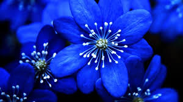

Blues are a color that’s a bit challenging to come by in the gardening world. The two best flowers for featuring true blues are Forget-me-nots and Himalayan Blue Poppy. Unfortunately, Himalayan Blue Poppies are extremely difficult to grow and are pretty hard to come by. Luckily for us, Forget-me-nots are much more forgiving, and they deliver a whole batch of pretty little blue flowers from spring to summer. They’ll do well in full sun or part shade, and should naturalize well in your landscape.
